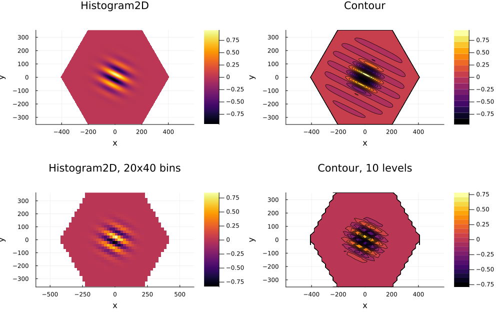

Working with LatticeValues
This chapter introduces the LatticeValue type, which describes a value defined on the sites of a lattice. LatticeValue implements the AbstractArray interface and is used to represent quantities such as the magnetization or local density of a state.
Basics
The LatticeValue type is actually a wrapper around a Vector of values, where each value is associated with a site of the lattice. Working with LatticeValue is very similar to working with a Vector, but with some additional functionality.
using LatticeModels, Plots
l = SquareLattice(-2:2, -2:2)
x = coordvalue(l, :x) # get the x coordinate of the lattice sites
v = zeros(Int, l) # create a lattice value with zeros
v[x = 1 .. 2, y = 1 .. 2] = x # set the value to the x coordinate on the top right
v[x = -2 .. 0] .= 3 # set the value to 3 on the left half of the lattice
r = randn(l) # create a random lattice value (normal distribution)
v2 = v .^ 2 .+ r # broadcast operations work as expected
heatmap(v2)The LatticeValue type implements basic vector creation operations: zero, zeros, one, ones, rand, randn, fill, copy. Slices and views are also supported.
There are also other AbstractVector methods you can use:
julia> sum(abs2, v2)1192.2130858807102julia> extrema(v2)(-1.2081242227007074, 10.40385728986268)julia> argmax(v2)2-dim Bravais lattice site in 2D space at [-1.0, -1.0]julia> ms = findall(x -> x < 3, v2)10-element Vector{LatticeModels.BravaisSite{2, 2, UnitCell{2, 2, 1, 4, 2}}}: Site at [1.0, -2.0] Site at [1.0, -1.0] Site at [1.0, 0.0] Site at [1.0, 1.0] Site at [1.0, 2.0] Site at [2.0, -2.0] Site at [2.0, -1.0] Site at [2.0, 0.0] Site at [2.0, 1.0] Site at [2.0, 2.0]julia> v2[first(ms)]-0.30012541979133645
Indexing and slicing
Let's talk a bit more about the indexing and slicing of LatticeValue. There are several ways to index a LatticeValue. The return value in this case is either a scalar or another LatticeValue with a narrowed domain. The following indexing methods are supported:
v[site]returns the value at sitesite.v[[site1, site2, ...]]returns aLatticeValuewith the values at the specified sites.site1,site2, etc. are single sites grouped into an abstract array. The return value is aLatticeValuewith the same values but narrowed to the specified sites.v[lat]returns aLatticeValuewith the same values but narrowed to the sites of latticelat.lathere must be a lattice, which is a subset of the lattice ofv.v[mask]returns aLatticeValuewith the same values but narrowed to the sites wheremaskistrue.maskhere must be aLatticeValueofBooltype, defined on the same (or a superset of the) lattice.v[x = 1 .. 2, y = 1 .. 2]returns aLatticeValuewith the same values but narrowed to the sites where the x coordinate is in the range1 .. 2and the y coordinate is in the range1 .. 2. The keyword arguments here must be the names of the site parameters (see Sites), and the values can be any containers or single values. Pair notation is also supported:v[Coord(1) => 1 .. 2, Coord(2) => 1 .. 2].
This indexing is valid for both reading and writing. Remember, however, that the right-hand side of the assignment must be a LatticeValue or a scalar value (in which case the destination site must be a single site, otherwise an error will be thrown).
Therefore, l[x=1, y=1] = 1 is not a valid assignment, because the left-hand side can contain multiple sites[1] (for example, if it is a 3D lattice). But l[!, x=1, y=1] = 1 is a valid assignment — adding ! to the index means that the left-hand side is a single site.
The same indexing methods can be used to slice a lattice, a GreenFunction, a Currents object or a TimeSequence.
Iteration and broadcasting
You can consider a LatticeValue as a vector of values, with its indices being the sites of the lattice. Therefore, iterating over v will yield the values of the LaticeValue, and eachindex(v) will return the lattice it is defined on.
Broadcasting operations work as expected. For example, v .+ 1 will add 1 to each value of v, and v .+ r will add the corresponding values of v and r. However, there are some limitations: you cannot broadcast a LatticeValue with anything other than a scalar or another LatticeValue. Also the lattices must be the same, otherwise an error will be thrown.
julia> using LatticeModelsjulia> l = SquareLattice(4, 4);julia> x, y = coordvalues(l)2-element Vector{LatticeValue{Float64, LatticeWithMetadata{LatticeModels.BravaisLattice{2, 2, UnitCell{2, 2, 1, 4, 2}}, params(:latticetype, :defaulttranslations, :nnbonds, :boundaries)}, Vector{Float64}}}: LatticeValue{Float64} on a 16-site SquareLattice in 2D space LatticeValue{Float64} on a 16-site SquareLattice in 2D spacejulia> v = zeros(l)LatticeValue{Float64} on a 16-site SquareLattice in 2D space Values stored in a Vector{Float64}: [0.0, 0.0, 0.0, 0.0, 0.0, 0.0, 0.0, 0.0, 0.0, 0.0, 0.0, 0.0, 0.0, 0.0, 0.0, 0.0]julia> v[x .< y] = x # This will workLatticeValue{Float64} on a 16-site SquareLattice in 2D space Values stored in a Vector{Float64}: [1.0, 1.0, 1.0, 1.0, 2.0, 2.0, 2.0, 2.0, 3.0, 3.0, 3.0, 3.0, 4.0, 4.0, 4.0, 4.0]julia> v[y = 1] .= 1 # This will workLatticeValue{Float64} on a 4-site SquareLattice in 2D space Values stored in a SubArray{Float64, 1, Vector{Float64}, Tuple{Vector{Int64}}, false}: [1.0, 1.0, 1.0, 1.0]julia> v[x .> y] .= y # This will not work - RHS on a different latticeERROR: DimensionMismatch: array could not be broadcast to match destinationjulia> v[x = 1] .= [1, 2, 3, 4] # This will not work - RHS is a vectorERROR: ArgumentError: cannot broadcast LatticeValue along Base.Broadcast.DefaultArrayStyle{1}()
Common operations
There are several common use-cases for the LatticeValue type. We will discuss some of them here.
External parameter of a system
In many cases, you need to define a parameter that depends on the site that is used in the Hamiltonian. For example, the on-site potential in the tight-binding model. You can use LatticeValue for this purpose.
using LatticeModels
l = SquareLattice(4, 4)
v = zeros(l)
v[y = 0 .. 2] .= 1.0 # add a potential barrier
H = tightbinding_hamiltonian(l, v, t1=-1.0) # create a tight-binding HamiltonianHere $v$ is a LatticeValue that represents the on-site potential. In other models you can use it to represent the magnetic field, for example: see qwz.
Wavefunctions
In some cases you need a custom-defined wavefunction. You can use LatticeValue for this purpose.
using LatticeModels
l = SquareLattice(10, 10)
x, y = coordvalues(l)
spin = SpinBasis(1//2) # create a spin basis
gauss = @. exp(-0.05 * ((x - 5.5) ^ 2 + (y - 5.5) ^ 2))
wave = @. exp(im * (x + y)) # create a plane wave
ψ = basisstate(spin, 1) ⊗ (@. gauss .* wave) +
basisstate(spin, 2) ⊗ (@. gauss * conj(wave))Here ψ is a QuantumOptics.Ket wavefunction. In this example it is a superposition of two states with opposite spins and different momenta.
We will discuss this theme in more detail in the [States and Operators] section.
Processing data
Many observables like local density are returned as a LatticeValue. You can process it quite easily.
using LatticeModels, Statistics
l = HoneycombLattice(Hexagon(), sites=120)
H = tightbinding_hamiltonian(l, t1=-1.0) # create a tight-binding Hamiltonian
dens = localdensity(groundstate(H)) # calculate the local density of the ground state
r = shaperadius(l, Hexagon()) # get the radius of the lattice
bulk = HoneycombLattice(Hexagon(r * 0.8))
edge = setdiff(l, bulk)
println("Average bulk density: ", round(mean(dens[bulk]), digits=6))
println("Average edge density: ", round(mean(dens[edge]), digits=6))Average bulk density: 0.012806
Average edge density: 0.001358The average local density in the bulk is much higher than on the edge, as expected.
We will discuss this theme in more detail in the [Measurements] section.
Visualization
One key feature of LatticeValue is that it can be visualized using the Plots.jl package. There are several ways to do it.
The "classical" way is just to use the plot function. The result will be a scatter plot of the lattice sites with the value of the LatticeValue as the color and size of the markers.
Let us continue with the previous example:
using Plots
plot(dens)This is the default behavior. You can customize the plot as usual with Plots.jl — for example, you can change the colormap, the marker size, etc. You can also set markerscale=false to disable the scaling of the marker size by the value of the LatticeValue:
# Dark theme makes everything look cooler
plot(dens, markerscale=false, markersize=12, c=:inferno,
title="Local density of the ground state", bg=:black)Another way to visualize a LatticeValue is to use the shape plot seriestype=:shape, or heatmap function. This will create a tile plot of the lattice sites with the value of the LatticeValue as the color of the tiles.
heatmap(dens, title="Local density of the ground state")You can also pass shape=:circle to create a scatter plot with large circles instead of the default markers. The difference here is that the size of the circles will scale with the plot, unlike the markers in the scatter plot. markerscale is also supported here, but by default it is set to false.
Let's showcase all of these options:
p = plot(size=(1000, 850), layout=(2, 2))
heatmap!(p[1], dens, title="Hexagons, no scale")
heatmap!(p[2], dens, markerscale=true, title="Hexagons, scale")
heatmap!(p[3], dens, shape=:circle, title="Circles, no scale")
heatmap!(p[4], dens, shape=:circle, markerscale=true, title="Circles, scale")Another important use case is dimension reduction. Before we already discussed how to plot a 2D slice of a 3D lattice. Here is an example of plotting a 1D slice of a 2D LatticeValue:
p = plot(size=(1000, 500), layout=(1, 2))
plot!(p[1], dens, st=:shape)
plot!(p[1], lattice(dens[j2 = 0]), :high_contrast)
plot!(p[2], dens[j2 = 0], axes=:x)By projecting axes=:x the selected values on j2 = 0 (e.g. the horizontal line in the middle of the plot) are shown as a 1D plot. Also we have shown the exact line where we took the slice from by plotting the markers with the :high_contrast setting.
Large lattices
The shape plot can be slow for large lattices (more than 1000 sites). The scatter plot is much faster, but the markers will overlap for large lattices, and the memory consumption for very big lattices is still very high. In this case, you can use the histogram2d or contour plots:
using LatticeModels, Plots
l = HoneycombLattice(Hexagon(), sites=1_000_000) # A really big lattice
v = LatticeValue(l) do (x, y)
sin((x + 2y) / 30) * exp(- (x^2 + y^2) / 100^2)
end
p = plot(size=(1000, 650), layout=(2, 2))
histogram2d!(p[1], v, title="Histogram2D")
contour!(p[2], v, title="Contour")
# Decreasing the number of bins will speed up the plotting, but decrease the quality
# Set as a tuple, number or via separate keywords `xbins`, `ybins` (can be omitted)
histogram2d!(p[3], v, xbins=40, title="Histogram2D, 20x40 bins")
contour!(p[4], v, bins=(30, 30), levels=20, title="Contour, 10 levels")
The heatmap plot produces a shape plot, not an actual heatmap. This is more due to historical reasons than anything else. If you need a real heatmap, use the histogram2d plot.
- 1This is somewhat similar to the behavior of arrays in Julia:
v[1:1] = 1will throw an error, even though the left-hand side is a single-element array.